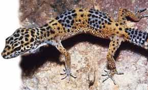

Террариум дома: содержание и уход
Сразу объясню слово террариумистика - это содержание и выращивание животных в террариуме. Слово "террариум" образовалась из известного всем латинского слова "terra" (земля) в противоположность слову "aqua" вода, от которого образовано слово аквариум. Террариум обозначает замкнутое пространство, в котором содержат "животных, живущих на земле".
Ясно, что границы между террариумом и аквариумом размыты, и, по сравнению с традиционным аквариумом область применения террариума намного шире. Для животных в аквариуме вполне достаточно плавать вперед и назад животные же помещаемые в террариум, тоже иногда хорошие пловцы, но, тем не менее, они располагают другими способами передвижения: они могут ползать, карабкаться, бегать, прыгать и даже летать. Это многообразие привлекает любителей животных. Если с рыбами практически невозможно завязать контакта, то жители террариумов время от времени разрешают себя потрогать или погладить. И даже могут проявить свои симпатии. Но кто хочет иметь животное, которое создает уют и разрешает себя постоянно гладить, тот должен завести кошку или собаку.

Некоторые говорят, что террариум это чистый эгоизм и эксплуатация животных. Чем опровергнуть такое обвинение? Хотя бы тем, что мы создаем наилучшие условия для жизни наших подопечных, ухаживаем за ними, кормим, охраняем от травм и болезней, и по возможности, создаем условия для размножения, кроме того, продлеваем им жизнь. Кто выполняет все это наверняка не эгоист, а настоящий любитель животных. Кто боится или считает своих животных противными и страшными тот не может считать себя любителем терраристики. Каждый владелец террариума может вести свои наблюдения за жизнью особенностях поведения своих питомцев и тем самым он вносит вклад в науку террариума. Уже только этим осуществляется значительная помощь маленьким животным. Владелец террариума может сделать и еще больше: изучая привычки своих животных он может передать опыт другим, например, в форме статьи в специальном журнале или на нашем сайте :). Ваши наблюдения помогут другим. Не знаю интересно или нет, самый старый труд от "террарие" был датирован 1797 годом и назывался "История природы комнатных животных-млекопитающих, амфибий, рыб, насекомых, червяков", автор которого социолог, ботаник Йоган Маттэус Бехштайн.